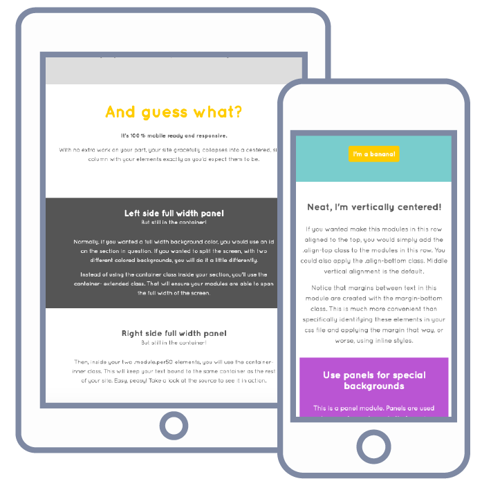

Paint is CSS framework that let's you 'paint' on styles with easy to remember classes. It speeds up development time, makes code easy to maintain, and is totally modular.
Adapt the existing settings to your own needs. Use what you want, scrap the rest. Aside from the basic building blocks: banner, container, module ... nothing else carries any dependencies. If you need to make changes to specific elements, just give that element an id and add it to the overrides section of the css file.
Except for font family and color choices, no extra css was written to create this page. What a time saver, eh?
By structuring your HTML with the basic building blocks (section, container, module), it's extra simple to quickly build gridded layouts. Rapidly stylize your site with simple stock classes to apply font sizes, weights, and decoration, width, alignments, padding, and margin.
Panels are used when you have elements that require colored or special backgrounds.
Paint lets you add styles without ever leaving your HTML file.
By nesting modules you can quickly and easily create sub-columns
Layout your content in a snap, and almost entirely in HTML!
Percentage based module widths means smooth transitions across all devices.
Paint is 100% mobile ready and responsive.
Paint's built-in mobile styles result in sites that gracefully collapse into a centered, single column. All other style elements are preserved.
